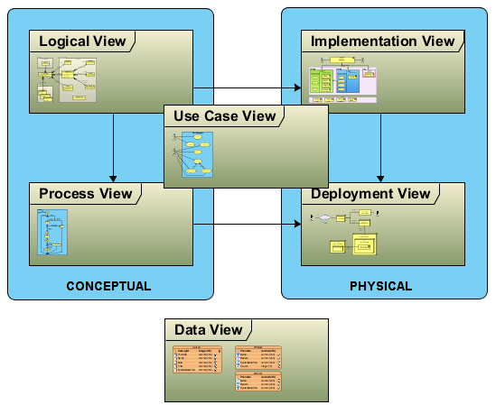

|
|
|
Package Diagram - RUP 4+1 View
 link
link
| Jump to: |
|  |
|
4+1 is a view model for "describing the architecture of software-intensive systems, based on the use of multiple, concurrent views". The views are used to describe the system from the viewpoint of different stakeholders, such as end-users, developers and project managers. The four views of the model are logical, development, process and physical view. In addition selected use cases or or scenarios are utilized to illustrate the architecture serving as the 'plus one' view. Hence the model contains 4+1 views. Optionally, a data view may be included. |